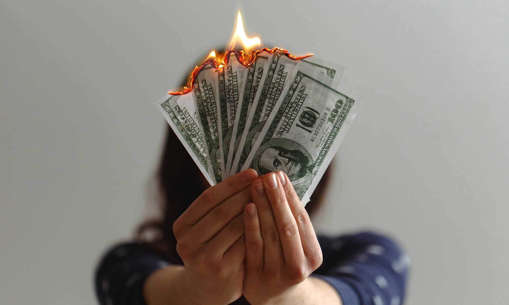
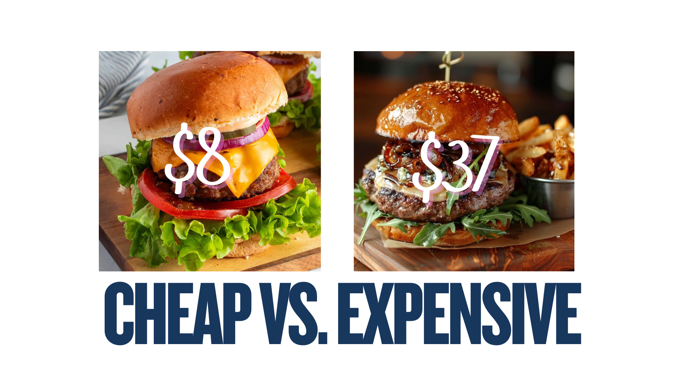
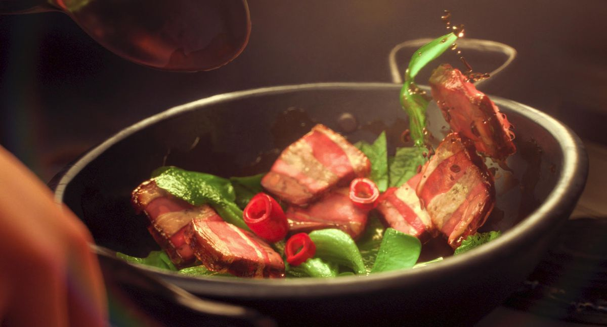
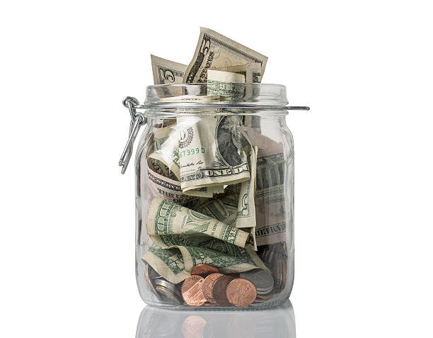

LiveLite Finance
Where is your money going?
The most important thing is to track your spending and act on your findings. Even though some things may seem small like a coffee or a netflix subscription but these things add up, you should quit habits like drinking, smoking and avoid spending hundreds a month on subscriptions.
Lets say, you buy a coffee a day from say starbucks or a local cafe, lets say thats $4 (even though it's probably more than that) If you stack up $4 a day over a year thats $1460 a year you're losing.
Set Budget Goals

Setting goals gives you a direction towards and prevents you from wasting time aimlessly. In addition to this, goals rewire your brain and supply you with motivation to achieve your goals.
TIP: Use 'SMART Goals' to make sure you actually achieve your goals - see here: SMART Goals Guide
Find cheaper options
Just finding cheaper options can make a HUGE difference. Don't waste money on luxury brands. Always look for the cheaper option, try find things for second hand or if its clothes look in a thrift store
You can do this by using the 'Map View' page on Livelite which has a variety of budget options for food, house items, clothes and more.
Cook it yourself
Cookng food yourself is often 3-5x cheaper than eating out, this combined with making sure you are picking cheap ingredients that are good value can seriously increase your saivngs.
Saving and Investing
This is arguably the most important tip on this list. You should make a savings account and put approximately half of your earnings in their and leave it aside for big purchases, this is to prevent you wasting it on little things like going out.
Tip: While you're building up your savings, you should invest your money. An easy low risk and reliable option would be index funds or a material stock like gold.